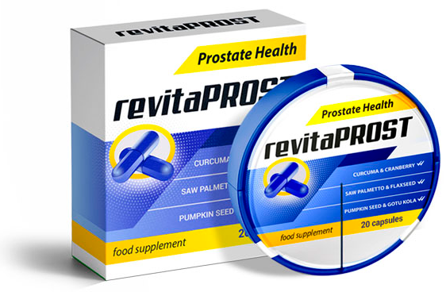

Hogyan lehet megszabadulni a prosztatagyulladástól?
Naponta rengeteg levél érkezik szerkesztőségünkbe, de az egyik közülük különösen felkeltette a figyelmünket. Úgy gondoljuk, hogy ennek megosztása igazán hasznos lehet a magazinunkat olvasók legalább felének.

Szeretném megosztani a történetemet, amellyel talán segíthetek más prosztatagyulladásban szenvedő férfiaknak is abban, hogy ők is újra egészségesek lehessenek. Nyilvánvaló okokból inkognitóban szeretnék maradni.
Először is, mi is az a prosztatagyulladás? Egyszerű szavakkal: a prosztata mirigyének gyulladása. Annak a mirigynek, amely azt a spermaváladékot idézi elő, amely a spermium számára lehetővé teszi, hogy eljusson a céljához és ne haljon meg amúgy is rövid életének korai szakaszában. A prosztata elzárja a húgyutakat a közösülés során, amely megakadályozza, hogy a spermiumok a hólyagba jussanak és fordítva. A prosztatagyulladásnak számos oka van, de a legfontosabbak közülük a mozgásszegény életmód és az alkohol.
A történetem jóval azelőtt kezdődött, hogy megtudtam, mi is az a prosztatagyulladás. Mindig úgy tűnt, hogy ez a szó a nyugdíjasok betegségeinek listájából származik, és semmi köze nem lehet hozzám. Körülbelül 15 éves koromtól kezdve rendszeresen fájdalmat kezdtem tapasztalni. Szúró fájdalom, nagyon furcsa természetű. Akkor még nem tudtam megmagyarázni, hol fáj pontosan. Nagyon ritkán fordult elő, és nem tulajdonítottam ennek semmilyen jelentőséget. Gondoltam, fene tudja, mitől lehet ez, ritkán fordult elő és kibírtam 5-10 percet ezzel a fájdalommal.
10 év telt el. Ez idő alatt szinte semmire sem volt panaszom. Legalábbis ezen a fájdalmon kívül, ami havonta 2-3-szor fordult csak elő, de néha még ennél is ritkábban jelentkezett. És valamilyen oknál fogva aztán elgondolkodtam, valószínűleg ez mindenkinél így szokott lenni. Ez csak egy olyan dolog, amelyről nem beszélnek. A legfájdalmasabb az volt, amikor szex után jelentkezett a fájdalom. Nem a legmegfelelőbb idő, hogy hideg verejtékben kuporodj össze a fájdalomtól.

És most, amikor 25 éves lettem, nyomasztó fájdalom jelent meg az ágyékomban. Egy héttel később ez annyira felerősödött, hogy a lábam a térdemig belülről zsibbadni kezdett. Először sérvre gondoltam. 4 sérvműtéten estem át, amelyek közül három inguinalis volt. Az érzés nagyon hasonló volt, és már mentálisan kezdtem is készülni a műtétre. Ebből kiindulva bejelentkeztem a sebészhez, aki megvizsgálta az ágyékom, és cáfolta a sejtéseimet, és ezután pedig beutalt egy urológushoz.
Az urológus vizsgálata fájdalmas volt. Az orvos elég kellemetlen helyzetbe hozott, bedugta az ujját (amit én úgy éreztem, mintha az egész keze lenne) a minden férfi által sérthetetlennek gondolt helyre. Majd a következőt mondta nekem: ha azt mondják Önnek, hogy lazítson egy ilyen helyzetben, jobb nem is próbálkozni. Körülbelül egy percet töltöttem ebben a helyzetben. Természetesen nehéz koncentrálni egy ilyen helyzetben, de közben válaszolnom kellett az orvos kérdéseire, hogy melyik pillanatban fokozódik a fájdalom. És a prosztata megnyomásának pillanatában fokozódott.
A vizsgálatok befejezése után az orvos azt ajánlotta, hogy kövessem az irodájába, és út közben a felfázásról viccelődött. De amint leültem az asztalához, a kedves bácsika kész főügyésszé változott. Életem legkeményebb és legmegalázóbb kioktatását kaptam meg tőle arról, hogy egy 45-50 éveseknél jellemző betegségben szenvedek. Aztán volt egy kis szünet. A csendet én törtem meg azzal a kérdésemmel, hogy MIT LEHET TENNI?. Az urológus letörte a lelkesedésem, és lassan elkezdte magyarázni, hogy mivel is van dolgunk. Kúpokat, tablettákat írt fel és előírt pár tesztet.
A kezelés segített. Egyébként ugyanennek az orvosnak a tanácsára kezdtem el sportolni (azt mondják, hogy megakadályozza a prosztatában lévő vér pangását). De uszoda után valahogy ismerős égő érzés jelentkezett nálam. Egy másik orvoshoz fordultam a problémámmal. Ismét ugyanaz történet: vizsgálatok, tesztek és ugyanazok a javaslatok. Ez egy ideig segített, de a probléma ismét visszatért.

Mint rájöttem, ez az urológusok számára szokásos gyakorlat: nem a betegség okát kezelik, hanem a tüneteket. Azok enyhítésére koncentrálnak. Ezért úgy döntöttem, hogy kezembe veszem az irányítást. Mindenhol kerestem a megoldást, az egész internetet átböngésztem, rengeteg véleményt olvastam különböző orvosokról is. Az egyik fórumon rábukkantam egy professzor nevére, aki egyszer és mindenkorra képes kigyógyítani az embert a prosztatagyulladásból. Igaz, a konzultációja csillagos áron volt.
De mégis hová mentem volna? Kértem egy időpontot, másfél hónapig vártam a soromra. Egy halom elvégzett teszttel érkeztem a professzorhoz. Szinte anélkül, hogy rájuk nézett volna, elővett egy doboz tablettát, átadta nekem és elküldött a recepcióra, hogy fizessem ki a konzultációt.
A készítmény neve volt. Elvégeztem egy egész kúrát, ahogyan azt kellett az utasítások szerint. A hatás lenyűgöző volt: nemcsak a fájdalom és az általános kényelmetlenség múlt el. A potenciám is jelentősen javult, az erekcióm egyre jobb és hosszabb lett.

A legjobb viszont az egészben, hogy másfél év telt el azóta, hogy befejeztem a kúrát, és azóta nem volt visszaesés.
Nemrég úgy döntöttem, hogy szedni fogom a készítményt a prosztatagyulladás megelőzéséhez is, valamint a potenciám növelésére.Körülnéztem az interneten, hogy megtudjam, alkalmas-e ez a szer ilyen célokra. Mint kiderült, igen, lehet használni ilyen célok elérésére is.
És még egy dolgot felfedeztem: a -be kerül tulajdonképpen sokkal kevesebbe kerül, mint amennyit a professzor klinikáján fizettem érte. A készítmény megrendelhető közvetlenül a gyártótól mindenféle felár és plusz díj nélkül.Szóval a professzor csalónak bizonyult.Ezért szeretném megosztani veletek a linket, ahol megrendelhetitek a készítményt a gyártó árán: